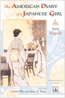

A ground-breaking work of Asian American fiction in a brand new edition
A ground-breaking work of Asian American fiction in a brand new edition


 A ground-breaking work of Asian American fiction in a brand new edition
A ground-breaking work of Asian American fiction in a brand new edition

|  |
The American Diary of a Japanese GirlAn Annotated EditionYone Noguchi, edited by Edward Marx with Laura E. Franeypaper EAN: 978-1-59213-555-4 (ISBN: 1-59213-555-2) |
"Yone Noguchi was an enormously important figure in the early twentieth-century crosscultural and cross-literary interaction between not only Japan and the United States but also Japan and Britain.... Laura Franey's careful Introduction and Edward Marx's well-conceived and knowledgeable Afterword frame The American Diary precisely in terms that will define for contemporary readers its importance as cultural history."
—David Ewick, Chuo University
The first American novel by a writer of Japanese ancestry, The American Diary of a Japanese Girl is a landmark of modern American fiction and Japanese American transnationalism. First published in 1902, Yone Noguchi's novel describes the turn-of-the-century adventures of Tokyo belle Miss Morning Glory in a first-person narrative that The New York Times called "perfectly ingenuous and unconventional."
Initially published as an authentic journal, the Diary was later revealed to be a playful autobiographical fiction written by a man. No less than her creator, Miss Morning Glory delights in disguises, unabashedly switching gender, class, and ethnic roles. Targeting the American fantasy of Madame Butterfly, Noguchi's New Woman heroine prays for "something more decent than a marriage offer," and freely dispenses her insights on Japanese culture and American lifestyles.
With the addition of perceptive critical commentary and comprehensive notes, this first annotated edition sheds new light on the creative inventiveness of an important modernist writer.
"A literary curiosity, it offers Noguchi’s insights on Japanese culture and American mores and manners, and through these, the actual conditions under which he lived his expatriate life."
—Japan Times
"There are many very beautiful poetic moments in the novel that show the author’s eventual status as a celebrated poet. The book captures a moment in time that is both innocent yet reveals some of the underlying differences that would culminate in the Pacific theater of World War II forty years after the book was published."
—The Asian Review of Books on the Web
"The Diary, with its whimsical English, is a delight; upon re-reading (with attention to editors Edward Mark and Laura E. Franey’s comprehensive notes) it gains greatly as a unique, highly perceptive commentary on cultural differences. Genjiro Yeto’s illustrations (from 1902) are a grace note."
—ForeWord
“[T]he work remains a charming, sly, remarkable volume. …If Noguchi’s Diary seems delightfully strange now, imagine how it was received by contemporary reviewers, though many found it at least light and entertaining. In any event, Noguchi’s book is worth reissuing and—cultural studies professors take note—rereading in this annotated edition. It has a rightful place among other East-West cross-cultural exchanges…”
—The American Book Review
Introduction – Laura Franey
The American Diary of a Japanese Girl – Yone Noguchi
Afterword – Edward Marx
Notes
Works Cited
Yone Noguchi was the first Japanese author to publish English-language novels and books of poetry. Born in 1875 near Nagoya, Japan, he traveled to the United States for the first time in 1893 and soon became part of the literary scene in San Francisco and later in London and New York City. He was the father of the noted Japanese American sculptor Isamu Noguchi, although their relationship was to prove a troubled one. In addition to his career as a literary writer and poet, Yone Noguchi served as Professor of English at Keio University in Tokyo and wrote essays, criticism, and translations, in both English and Japanese. He died in 1947.
Edward Marx is Associate Professor of Euro-American Culture, in the Faculty of Law and Letters, Ehime University. He is the author of The Idea of a Colony: Cross-Culturalism in Modern Poetry and is currently writing a biography of Yone Noguchi.
Laura E. Franey is Associate Professor of English at Millsaps College in Jackson, Mississippi. She is the author of Victorian Travel Writing and Imperial Violence: British Writing on Africa, 1855-1902.
American Studies
Asian American Studies
Literature and Drama
© 2015 Temple University. All Rights Reserved. This page: http://www.temple.edu/tempress/titles/1876_reg.html.